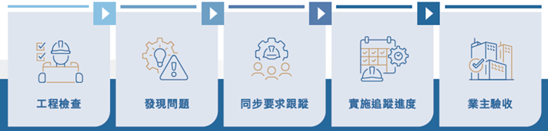

我們積極與不同的持份者溝通、協調、學習，尋找共同推進業內可持續發展的合作機會、夥伴研發及推廣可持續建材和建築技術，共同營造更加宜居及可持續的建築物。
作為建造業議會工地電氣化和潔淨能源應用的可行性研究工作小組主席，中建香港積極搭建協同平台，與業內機構進行技術交流及分享，構建起開放共贏的可持續建設創新生態圈。
2024年，中建香港對近400家供應鏈夥伴展開可持續發展評估調查。數據顯示，供應鏈夥伴在可持續實踐方面取得實質進展：環境維度上，多家企業已建立碳足跡監測系統並採用可持續建材，其中表現突出者更獲得ISO14001環境管理認證；社會維度方面，夥伴們持續完善員工發展計劃與職業安全體系，同時積極導入可持續採購準則。作為可持續建築的實踐者，中建香港將持續推動供應鏈協作，透過知識轉移與能力建構，與價值鏈夥伴共同推進建築產業的可持續轉型，實現環境友善與社會共融的發展願景。
我們積極與學術界及供應鏈夥伴協作，共同研發及推廣可持續建材和建築技術。通過與業界企業及科研機構建立戰略合作，共享專業知識與技術資源，針對複雜技術難題開發出更具協同效應的高效解決方案，實現多方共贏的發展格局。
作為建造業議會多個委員會的成員，包括建造業創新及科技基金管理委員會、建造安全專責委員會、建築業營商及生產力委員會，我們積極參與行業標準制定和技術創新，推動整個建造業的可持續發展。
我們推動工程建設與創新技術與「TRANSTRACK」系統的全方位融合，特別在落實2024年自檢率超過90%的質量目標指標，建構智能化全流程管控體系。作為覆蓋質量、安全等多維度的智能化多方協作平台，「TRANSTRACK」透過Web端與移動App的雙端協同，賦能施工現場管理人員實現傳統管理方式的數位化轉型，更透過嚴格的內部質量預控機制，顯著提升項目協同效能與質量控制水準。
我們恪守商業道德，確保所有業務活動符合法律法規和道德標準。通過完善的資料保障機制，保護客戶及企業資料安全，建立信任關係，為長期合作奠定基礎。
通過與各方夥伴的緊密協作，我們在多個領域取得了顯著成果。在BIM應用方面，92%的項目已應用建築信息模擬技術；在綠色建築認證方面，我們參與了39個綠建環評項目，展現了我們對可持續建築的承諾。
面向碳中和願景，我們將以「三個深化」開啟新徵程：深化ESG治理體系與業務決策的融合度，深化建築行業低碳技術成果轉化，深化產業協同創新網絡密度。作為香港城市建設主力軍，中建香港將持續賦能城市建設與生態文明的共生共榮，譜寫可持續發展的時代答卷。